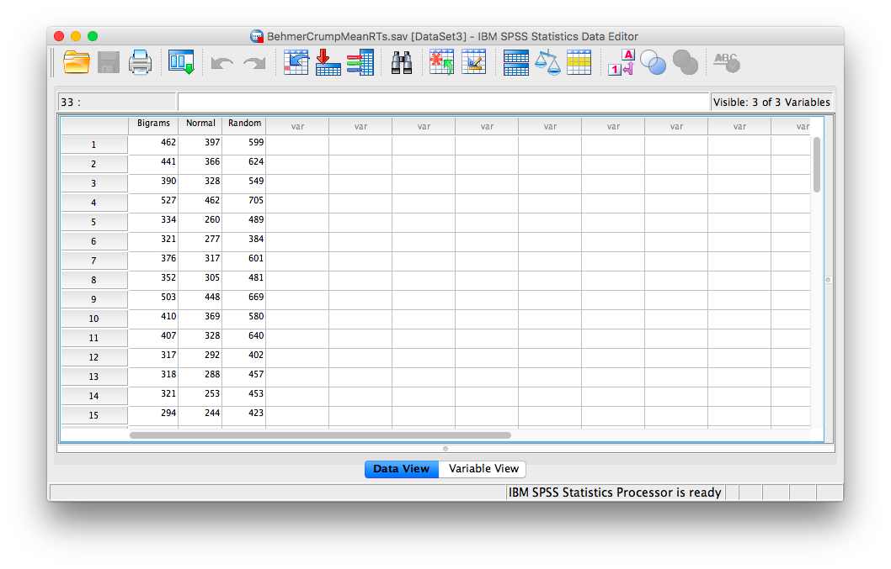
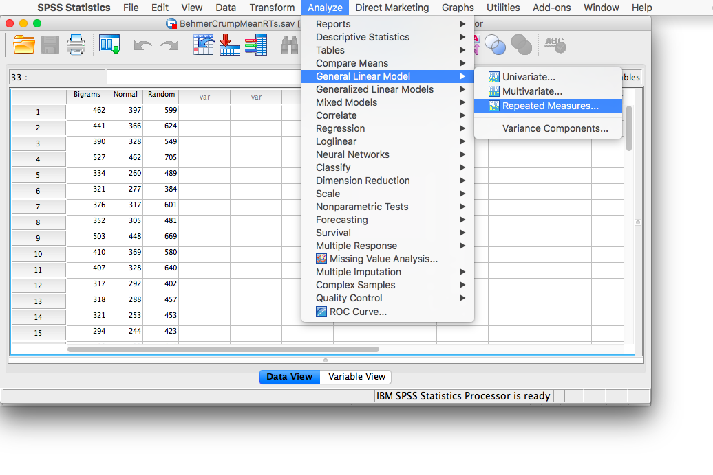
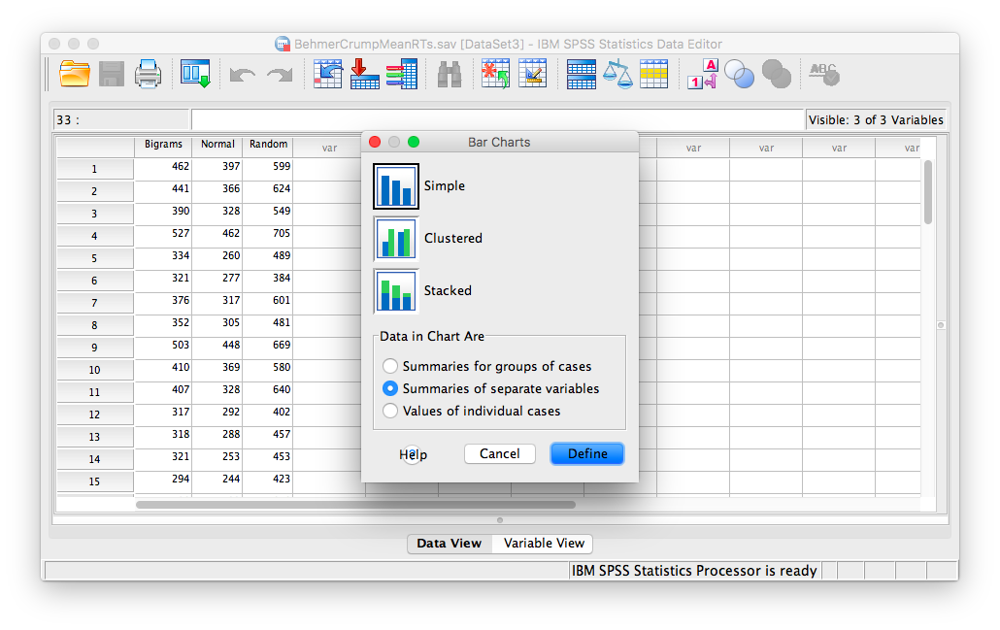
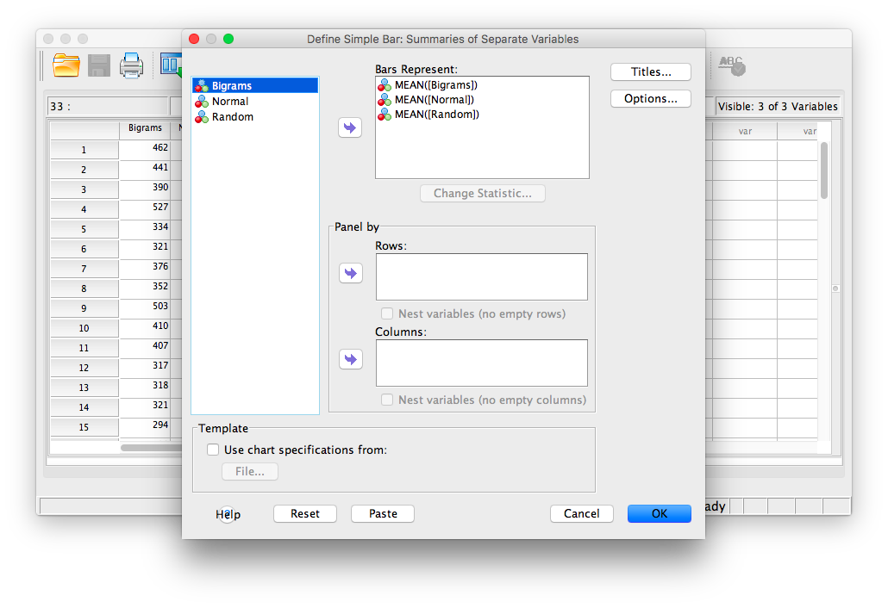
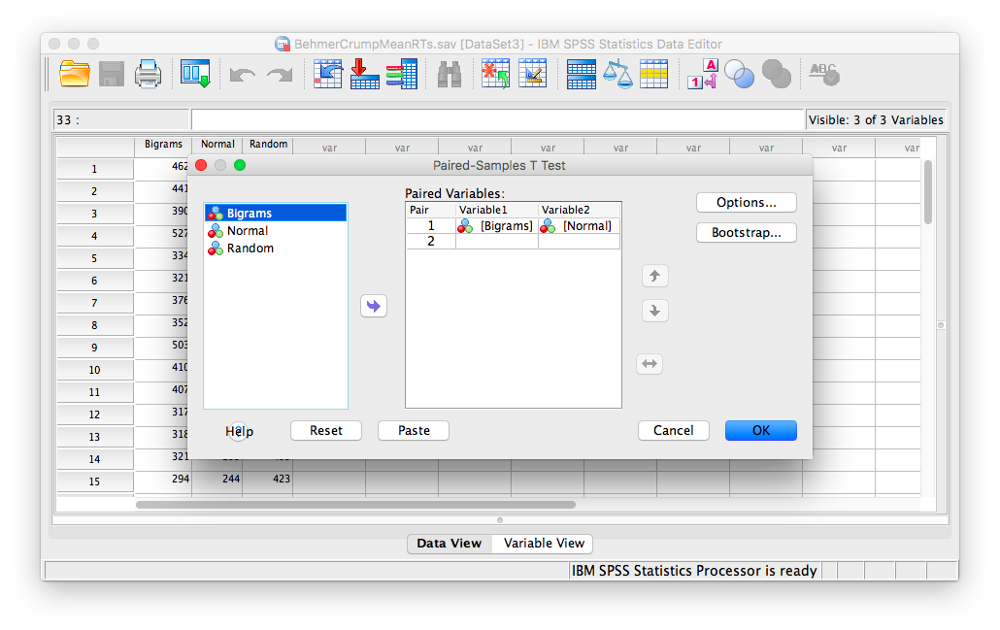
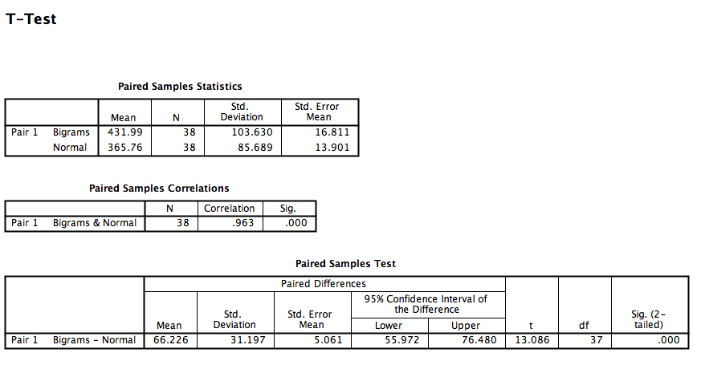
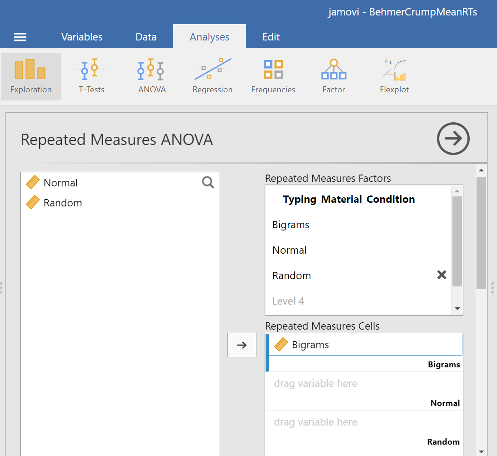
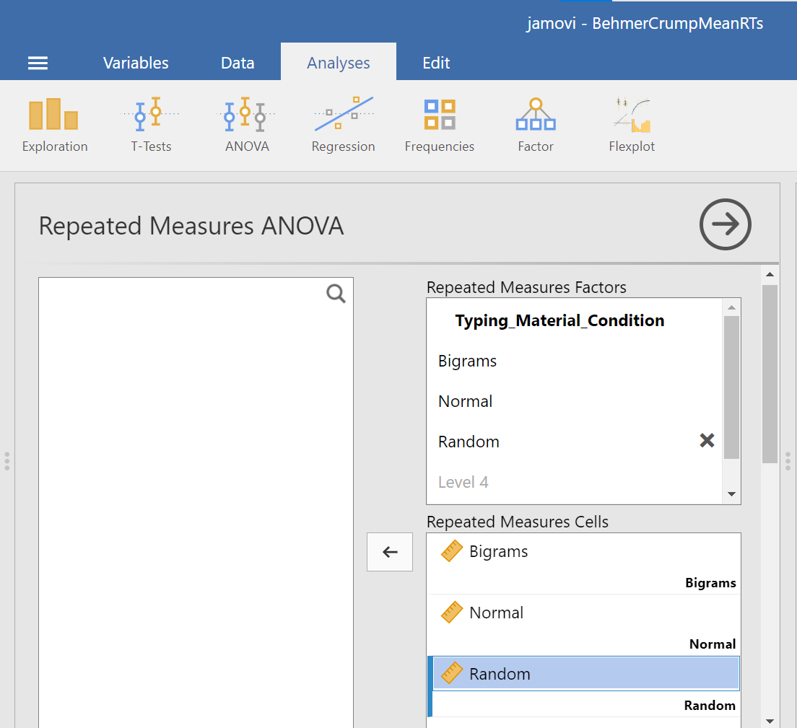
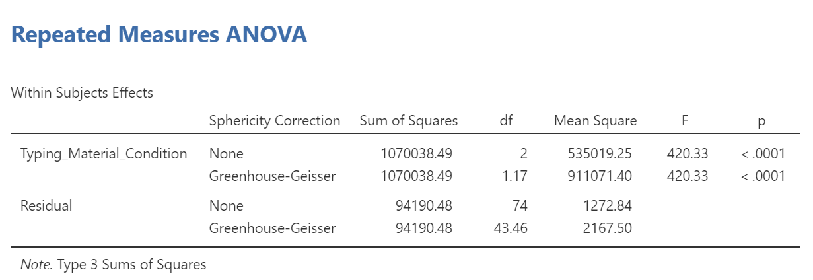

Chapter 8 Lab 8 Repeated Measures ANOVA
However, perhaps the main point is that you are under no obligation to analyse variance into its parts if it does not come apart easily, and its unwillingness to do so naturally indicates that one’s line of approach is not very fruitful. —R. A. Fisher
8.1 Betcha can’t type JHDBZKCO very fast on your first try
This lab activity uses the data from Behmer & Crump (2017) to teach one-factor repeated measures ANOVA with-up follow comparisons
8.1.1 STUDY DESCRIPTION
Behmer & Crump (2017) used the everyday task of typing on a computer keyboard to ask questions about how people learn to put sequences of actions together. Whenever you type a series of letters on the keyboard, you are putting a sequence of actions together, so typing is task that could be used to measure skilled sequencing. Typing also happens to be a convenient task for measuring sequencing. For example, every time a person types a letter, the timing of the button press and the letter pressed can be measured and stored for later analysis.
Behmer & Crump were interested in asking a few different questions, however, we will simplify everything and talk about replication. First we describe an interesting finding from previous research. Behmer & Crump repeated an experiment that should also produce this same finding. If they succeed in doing this, it means the finding can be replicated, and that it happens in more than one lab.
Finding from previous resaearch: Prior research showed that typists do something funny. Skilled typists can type normal words very fast. This suggests they know how to locate all of the letters on the keyboard, and can press each letter very quickly to type words. That part isn’t particularly funny. However, if you take really skilled typists and make them type random letters like this: kwitb dhhgjtryq xkldpt mazhyffdt, guess what happens? They slow down a lot. It’s kind of weird that a typist would slow down, after all they can type letters really fast when they appear in words, but not when they appear in random orders…what gives? Last, it turns out that typists are kind of in the middle in terms of speed, if you ask them to type non-words that have similar properties to words, such as: quenp hamlke phwempy.
To summarize, prior research showed that typing speed changes as a function of the structure of the text, roughly in this order from fastest to slowest.
(FASTEST) Normal Words < Word-like Non-words < Random strings (SLOWEST)
Replication question: Behmer & Crump also measured typists while they typed words, non-words that were English-like, and random strings. They had some additional things they were interested in, but for us, we are interested in whether they would show the same effect. Would they replicate the pattern: Normal words (Fastest) < Word-like Non-words (medium) <- Random strings (Slowest)?
8.1.2 Study Methods
The authors conducted a repeated measures experiment. A total of 38 subjects were used for the analysis.
Independent Variable: The IV Stimulus or typing material had three levels: Normal, Bigrams, and Random. Normal refers to normal 5 letter English words (like truck, or plant). Bigrams refers to non-words that have properties similar to words (e.g., phemt quilp). Random refers to 5 letter strings whose letters were totally random (qmklt gdrzn lprni).
Dependent Variables: There were three dependent variables, that all measured different aspects of typing performance. Reaction times (RTs) were defined as the temporal interval between seeing a stimulus (to type), and then starting to type it (first key press). Inter-keystroke intervals (IKSIs) are the times between each key-press. Last, accuracy was also measured (correct or incorrect key-presses)
The task: Participants (who happened to also be students from Brooklyn College) sat in front a computer. They were presented with one stimulus (word, bigrams, or random) at a time. As soon as they saw the string of letters, they typed it as quickly and accurately as they could, then they moved on to the next trial.
Reminder, this is a repeated measures design because each participant typed letter strings from the word, bigrams, and random conditions.
8.2 Lab Skills Learned
- Conducting a one-factor repeated measures ANOVA
- Conducting follow-up comparisons
8.3 Important Stuff
- citation: Behmer, Lawrence P., Crump, M. J. C. (2017). Spatial Knowledge during Skilled Action Sequencing: Hierarchical versus Non-Hierarchical Representations. Attention, Perception & Psychophysics, 79, 2435-2448.
- Link to .pdf of article
- Data in .csv format
8.5 SPSS
In this lab, we will use SPSS to:
- Produce a frequency histogram and remove outliers
- Conduct and graph One-Factor Repeated Measures ANOVA
- Conduct planned comparisons using a paired-samples t-test
8.5.1 Experiment Background
In this experiment, Behmer and Crump (2017) recruited 38 subjects to type words presented on a screen as quickly as they could. The independent variable was typing material and it had 3 levels: Normal (5 letter English words), Bigrams (5 letter non-words that have properties like real words), and Random (random 5 letter strings). The authors wanted to know whether reaction time (RT) was different according to the type of word being typed.
Dependent Variables: There were three dependent variables, that all measured different aspects of typing performance. Reaction times (RTs) were defined as the temporal interval between seeing a stimulus (to type), and then starting to type it (first key press). Inter-keystroke intervals (IKSIs) are the times between each key-press. Last, accuracy was also measured (correct or incorrect key-presses). For this analysis we will use Pure RTs as our one DV.
Nota bene: This is a repeated measures design because each participant typed letter strings from the word, bigrams, and random conditions.
8.5.2 Produce a frequency histogram and remove outliers
Here is a link to the data file. It is named BehmerCrump.sav. Your data should look like this:
First, we’ll be creating a histogram to look at our data. Go to Graphs, then Legacy Dialogs, then Histogram…

The next window will ask you to specify the variable you would like graphed. Choose PureRTs from the list on the left and move it into the “Variable” field using the arrow.

Click OK. SPSS will produce a frequency histogram of your data.
Notice that the RTs form a positively skewed distribution. Most RT measurements are on the lower end of the scale, and there are very few RTs that are higher than 5000ms. These measurements could have resulted from subjects falling asleep, looking at their phones, or being otherwise distracted in the middle of the experiment. We want to remove those values so they do not influence and mischaracterize our results. To do this, go to the top menu and choose Data, then Select Cases…

The next window will ask you which cases to select. We specifically want to remove any cases larger than 5000, so check off If condition is satisfied:
Then click If… The window that follows will ask you to specify the condition for inclusion. Find the variable PureRTs in the left-hand list and move it to the field on top using the arrow. Then, type “< 5000” to specify that we want to keep only values under 5000ms.

Click Continue. Your data has now been edited so that trials on which the PureRTs value was greater than 5000 have been removed.
Let’s take some time to think about this data. We have measurements taken from many participants across multiple trials and multiple conditions. Our goal is to be able to come up with a single RT for each person per condition. The only way to do this is to take an individual’s RTs for a particular condition and average them. To do this, we need to calculate means. First, go to Analyze, then Compare Means, then Means…
In the next window, move the PureRTs variable into the “Dependent List” field. In the field below, labeled “Independent List”, place the Subject variable:

Then, click Next. The bottom field will become blank again, and you can now place the Stimulus variable into it.
Click OK. SPSS will produce an output table containing each subject’s average RT per condition:

8.5.3 Conduct and graph One-Factor Repeated Measures ANOVA
For this part of the tutorial, we will switch over to a new SPSS file. Here is the link; it’s called BehmerCrumpMeanRTs.sav. When you open the file, it should look like this:

Notice that this file contains the means from the table we just created. Each person’s data is contained within a row: there are 3 measurements corresponding to all stimulus conditions. To calculate a One-Factor Repeated Measures ANOVA, go to Analyze, then General Linear Model, then Repeated Measures…

The next window will ask you to label your within-subjects variable. Type Stimulus into the “Within-Subjects Factor Name” field. Indicate that this variable has 3 levels. Then click Add, and then Define.

In the next window, move all 3 conditions listed on the left into the “Within-Subjects Variables” field.

Click OK. SPSS will produce an output table labeled “Tests of Within-SUbjects Effects” that contains The F statistic and its corresponding p-value.
From this table, we see that there is a significant effect of stimulus on RT, F(2, 74)= 420.33, p<.05. In order to graph this data and look at the means, go to Graphs, then Legacy Dialogs, then Bar…

In the next window, choose Simple, but this time select Summaries of separate variables, then Define:

In the next window, move the three stimulus conditions listed in the field on the left into the field labeled “Bars Represent.”

Then click OK. SPSS will produce a bar graph with each bar representing the mean of each of the conditions. We can see that the Random condition has the longest RT, followed by Bigrams, and then Normal. However, at this point we do not know which groups are significantly different from the others.

8.5.4 Conduct planned comparisons using a paired-samples t-test
To find out where the difference among these 3 conditions exists, we will use a planned comparison in the form of a paired-samples t-test. This method takes 2 groups at a time and tests for pairwise differences. There are three comparisons that can be made here:
- normal vs. bigram
- bigram vs. random
- random vs. normal
We will use a paired-samples t-test instead of an independent-samples t-test because in each comparison, the same people are being remeasured in each group.
To begin, go to Analyze, then Compare Means, then Paired Samples T-test…

In the next window, move the two conditions of our first pairwise comparison (normal vs. bigram) into the field on the right using the arrow.

Click OK. SPSS will produce a series of tables. The “Paired Samples test” table contains the t-statistic and its associated p-value.

Looking at this output, we can see that the Normal and Bigrams conditions are indeed significantly different, t(37)= 13.09, p<.05.
You can use this same method for the remaining comparisons.
8.5.5 Practice Problems
Run the same analysis as illustrated in this lab tutorial but with accuracy (correct) as the dependent variable. Use an alpha level of .05. Remember to calculate means per subject and stimulus first. This will generate a table, whose values you can enter into a new SPSS spreadsheet file.
Is there an effect of stimulus on error rate? If so, conduct the appropriate planned comparisons.
Graph the means using a bar graph; include +/-1 SEM Error bars.
8.6 JAMOVI
This section is copied, almost verbatim, with some editorial changes, from Answering questions with data: The lab manual for R, Excel, SPSS and JAMOVI, Lab 8, Section 8.6, SPSS, according to its CC license. Thank you to Crump, Krishnan, Volz, & Chavarga (2018).
In this lab, we will use JAMOVI to:
- Conduct and graph One-Factor Repeated Measures ANOVA
- Conduct follow-up tests
8.6.1 Experiment Background
As described in more detail at the beginning of this lab manual section, Behmer and Crump (2017) recruited 38 subjects to type words presented on a screen as quickly as they could. The independent variable was typing material and it had 3 levels: Normal (5 letter English words), Bigrams (5 letter non-words that have properties like real words), and Random (random 5 letter strings). The authors wanted to know whether reaction time (RT) was different according to the type of word being typed.
Dependent Variables: There were three dependent variables, that all measured different aspects of typing performance. Reaction times (RTs) were defined as the temporal interval between seeing a stimulus (to type), and then starting to type it (first key press). Inter-keystroke intervals (IKSIs) are the times between each key-press. Last, accuracy was also measured (correct or incorrect key-presses). For this analysis we will use Mean RTs as our one DV.
Nota bene: This is a repeated measures design because each participant typed letter strings from the Normal, Bigrams, and Random conditions.
8.6.2 Checking Assumptions
Recall that the Repeated Measures ANOVA assumes:
The sampling distributions are normally distributed. Consider the central limit theorem and/or histograms.
The data are measured using an interval or a ratio scale. Consider what you know about how the data were collected and/or look at the variable attributes in the JAMOVI data spreadsheet.
The data are spherical. (No two conditions are any more dependent than any other two. OR There is equal correlation among pairs of conditions. OR There is equal variance among differences between pairs of conditions.) To test this, we use Mauchly’s test. This test can be requested when you run the Repeated Measures ANOVA in JAMOVI.
Challenge: On your own and using the data set to be used in our lab demonstration, check the first two assumptions. Were these assumptions met or violated? How do you know? (Be prepared to answer these questions at the beginning of lab.)
8.6.3 Conduct and graph One-Factor Repeated Measures ANOVA
Here is the link to the data set we will use; it’s called BehmerCrumpMeanRTs.omv. When you open the file, it should look like this:

Notice that this file contains means. Each person’s data is contained within a row: there are 3 measurements corresponding to all stimulus conditions. To calculate a One-Factor Repeated Measures ANOVA, go to Analyses, ANOVA, and then Repeated Measures ANOVA.

In the pane where you enter the commands, you can label your within-subjects variable. In the window called “Repeated Measures Factors,” type the name after highlighting or clicking in the area where you read “RM Factor 1”. Remember, we are looking at a One-Factor Repeated Measures ANOVA, so we only need to concern ourselves with this section. In other words, we do not have other “factors” to consider (We can ignore “RM Factor 2”.).

At this point, we need to define the levels of this factor. Notice that only two levels are being displayed in JAMOVI under the “Repeated Measures Factors” window. In its font colour, “Level 3” is light grey, rather than black. (Even if we move the names of the levels into the “Repeated Measures Cells,” JAMOVI does not rename the levels above.) If you want the names of the levels to show in your output, type the names of the levels in where you see Level 1, Level 2, and so on in the “Repeated Measures Factors” window.

Then, you should highlight and drag each and every level of the factor (aka variable) from the window on the left to the corresponding area in the “Repeated Measures Cells” window on the right.



Before we can look at the results JAMOVI has been generating in the Results pane, we should request Mauchly’s test. To do this, move down in commands pane (on the left), and under the “Assumption Checks” ribbon, select Sphericity tests. Just in case the assumption of sphericity is violated, you could request corrections at this time; click Greenhouse-Geisser.

JAMOVI will produce a few tables in the Results pane. Much like you checked the results of Levene’s test before moving ahead to read the One-Way ANOVA table (when you performed a One-Factor or One-Way ANOVA), you should check the results of Mauchly’s test before moving ahead to read the Repeated Measures ANOVA table. Let’s do that; let’s check the results of Mauchly’s test.

Mauchly’s test indicates a significant result, p < .0001. The assumption of sphericity is violated. We should read the results of the Repeated Measures ANOVA table with the sphericity correction, the Greenhouse-Geisser correction, applied.

To make it easier for you to read, let’s cover any information that we will not use in our interpretation of the results.

From this table, we see that there is a significant effect of stimulus (or typing material) on reaction time because p < .0001. We might say it more formally as follows:
A one-way repeated measures ANOVA was conducted, and Greenhouse-Geisser estimates of sphericity were used to correct the degrees of freedom (ε = .59) because Mauchly’s test indicated a violation to the assumption, p < .05. The mean reaction times were significantly different among the types of stimulus, F(1.17, 43.46) = 420.33, p < .0001.
Have a look at the two tables from which these results were taken. Can you see where these statistics were taken from?
Remember this is an omnibus ANOVA result. We do not know how many differences among means exist or between which means they would be found.
In order to graph this data and look at the means, go to back into the analysis commands. Remember, you can do this by clicking on the results generated in the Results pane. The commands will appear on the left of your JAMOVI file. Now, scroll down to the “Estimated Marginal Means” ribbon. Move the factor (in our example, Typing_Material_Condition, to the Marginal Means window under “Term 1”. Then, under “Output”, select Marginal means plot and Marginal means tables.

In the Results pane, you should now see a graph and a table.


Think about an answer to this question: Looking at the graph and considering the mean of each level, where would you guess at least one significant difference in mean reaction times between stimulus levels might be found?
To the best of our knowledge, there is currently no way to request a bar graph depicting all three means using JAMOVI.
8.6.4 Conduct follow-up tests
8.6.4.1 Planned comparisons
If you had a priori hypotheses about where the difference(s) may be, you would conduct planned comparisons. In JAMOVI, there is no easy way for us to request these planned comparisons because there are no built-in or programmed contrasts, and there is no way to chunk variance. As such, you would do conduct planned comparisons in JAMOVI by conducting paired-samples t-tests because, in each comparison, the reactions times are being measured from the same people.
8.6.4.2 Post-hoc tests
If you had no a priori hypotheses about where the difference(s) may be, you would conduct unplanned comparisons, or post-hoc tests. To find out where the difference among these 3 conditions exists, we will use post-hoc tests.
We could go through the menus again to request the post-hoc tests, or we could simplify the output in the Results pane by clicking on the Results to have the commands pop up to the left. Let’s do the latter. Next, scroll down to the “Post Hoc Tests” ribbon, move the factor (Typing_Material_Condition) to the window on the right, and then select the correction you want applied. Let’s select Bonferroni.

JAMOVI will produce a new table in the Results pane. It will appear before the graph JAMOVI created based on commands entered previously.

Before reading ahead, think about this: We had already written information about the results of the omnibus ANOVA. What would we now add to this write-up to help readers understand the significant result in more detail?
If we wish to view and report the descriptive statistics, we could find the mean reaction times for each level (typing material condition), as well as the 95% confidence interval, in the “Estimated Marginal Means” table in the Results pane. This table does not give us the standard deviation, though. To get the standard deviations, use the commands with which you are familiar: Analyses, Exploration, and Descriptives.

To get the effect sizes, you will need to calculate Cohen’s d. An appropriate formula to use follows:

We will need to calculate the effect size for each comparison we will report. Remember, there were three unique comparisons. We can take the mean difference from the “Post Hoc Comparisons” table or fill in each pair of means and take the difference. The calculation of effect size for the comparison between the Bigram and Normal conditions follows:

The calculation of effect size for the comparison between the Bigram and Random conditions follows:

The calculation of effect size for the comparison between the Normal and Normal conditions follows:

Based on the statistics presented in tables presented in this section, we would add to what we had already formally written about the omnibus ANOVA and construct a Results section something like this:
A one-way repeated measures ANOVA was conducted, and Greenhouse-Geisser estimates of sphericity were used to correct the degrees of freedom (ε = .59) because Mauchly’s test indicated a violation to the assumption, p < .05. The mean reaction times were significantly different among the types of stimulus, F(1.17, 43.46) = 420.33, p < .0001. Post-hoc pairwise comparisons with Bonferroni corrections were performed. It was found that mean reaction time in the Bigram condition (M = 431.99, SD = 103.63, 95% CI [397.93, 466.05]) was significantly different from that in the Normal condition (M = 365.76, SD = 85.69, 95% CI [337.60, 393.93]), p < .0001, d = 0.64, and the mean reaction time in the Bigram condition was also significantly different from that in the Random condition (M = 596.23, SD = 139.77, 95% CI [550.29, 642.29]), p < .0001, d = -1.58. Furthermore, the mean reaction time in the Normal condition was significantly different from that in the Random condition, p < .0001, d = -2.69.
8.6.5 Some APA formatting reminders for writing results sections
Always note the name of the test you performed (in this case, one-way analysis of variance, or ANOVA) and whether the result is significant or non-significant (Note: We do not use the word insignificant.).
We usually round to two decimal places, except for p-values. If your p-value was .0001, it would be okay to write p = .0001 or p < .001.
Do not include a leading 0 before the decimal for the p-value (p = .001 not p = 0.001, or p < .05 not p < 0.05) or before ε (ex. ε = .59 not ε = 0.59).
Yes, I’m serious. No, I don’t know why. Yes, it does seem a bit silly. Yes, you lose points if you don’t adhere to APA format when requested to do so.
Pay attention to spaces, parentheses, etc. APA is very picky about that. For example, it’s F(3, 35.75) = 6.08 not F(3,35.75)=6.08. There are spaces on either side of =, >, or < symbols.
Italicize symbols such as M, SD, p, t, d, and F.
8.6.6 Homework
See Moodle.
8.6.7 Practice Problems
In the lab demonstration, we saw that the assumption of sphericity was violated. Try changing data points until the assumption is upheld.
In the lab demonstration, we saw that the assumption of sphericity was violated. Try changing data points until the assumption is upheld while aiming to minimize the changes you make overall.
Use the Mean Accuracy Scores 2 data set to practice checking assumptions and running a repeated measures ANOVA with follow-up testsing.
When we discussed t-tests, we talked about the Mehr, Song, and Spelke (2016) study. Have a look at that data set, and try to develop a research question that might be answered with a repeated measures ANOVA. (Hint: It is okay to use only the variable name, rather than the phrase for what was measured, in your research question.)